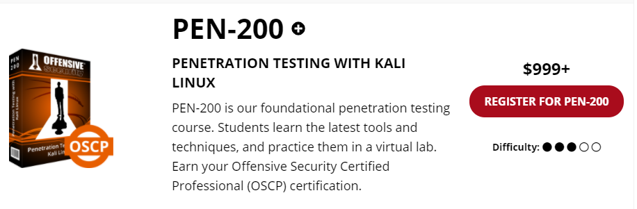
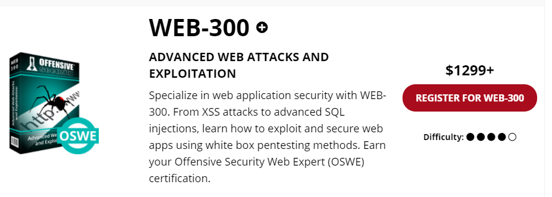
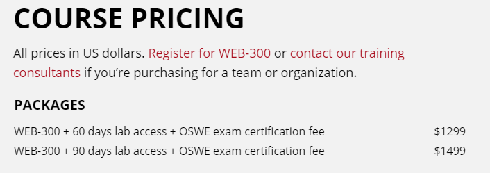

My OSWE Journey
OSWEに合格しました！！
まずは証拠

レポートを提出した 翌日 に合格通知が届きました。 OSCPの時は4日かかったので，今回もそれくらいかかるだろうと思っていたのですが，とても早くて驚きました。その一ヶ月後くらいに合格証も届きました。
OSWEとは
Offensive Security Web Expert (OSWE)とは，WEBアプリケーションに特化したペネトレーションテスト（以下ペネトレ）の資格です。Offensive Security社のペネトレ系の資格といえばOffensive Security Certified Professional (OSCP)があります（私の合格体験記はこちら）が，OSWEはOSCPよりも（公式の想定する）難易度の高い試験となっています。
OSCPとOSWEの難易度（公式サイトから引用）
 
試験は全部で 72時間 あります。最初の48時間で2台のマシンを攻略していきます。その後の24時間でマシンの攻略手順をレポートにまとめ、提出します。
各マシンの配点は非公開なのでここには書きません。（どうしても知りたい，という方はOSWE journeyのようなキーワードでググれば見つけられると思います。） 85点以上 取れれば合格です。
また、「ラボ」と呼ばれる、ペネトレの練習環境が与えられます。ラボの期間は30日・60日・90日から選ぶことができ，私は 60日 を選択しました。（現在は60日と90日しか選択できないようです。）一通りPDFや動画に目を通してから各マシンを攻略し終えるのに40日くらいかかったので，個人的には丁度良かったです。

OSWEの試験はオンラインで行われます。マシンの攻略中はずっと試験官に監視された状態で試験を受けることになります。
受験したきっかけ
去年の7月にOSCPに合格し，次は何を受けようかと考えていたところ，OSWEという資格があることを知りました。 私は現在業務でWebアプリケーションの脆弱性診断をしており，ちょうどWebの知識を深めたいと思っていたので，受験することにしました。
どんな風に進めるか？
OSWEにおけるマシン攻略の手順は以下の通りです。
- 与えられたソースコードを読む
言語についての理解を深めるよりも，Webサイトのソースコードの構造を勉強しておく方が重要です。送信したリクエストがどのように処理されているかをラボ環境などで確認しておくと良いと思います。
- 実際にWebサイトを覗いたり，デバッグしたりして脆弱性を探す
OSWEのテキストを読むと分かるのですが，デバッグの手法の説明にかなりのページを割いています。
Burp Suiteでリクエストとレスポンスを確認するだけでなく，VS Codeを用いたり，SQLのクエリログも確認したりします。
- 脆弱性を悪用する
脆弱性を見つけたら，どう悪用するかを考えます。例えばクロスサイトスクリプティングの脆弱性が存在した場合，管理者のCookieを窃取することで管理者としてログインできるか，といったようなことを試します。
Proof of Concept code (PoC)を作成する
脆弱性が悪用できることを証明するスクリプトを書く必要があります。言語は自由です。私はPythonで作成しました。
試験当日の様子
12:30
準備開始
OSCPを受験したことがあるので特に問題ないと思っていましたが，「試験に使う監視ツールは最新版のChromeとFirefoxでは動かないから古いバージョンを使ってね」という旨のメールが当日に届いており，あわててインストールしました。
12:45
接続の準備
13:00
1台目のマシンに着手
16:00
脆弱性を発見
18:00
マシンを攻略完了
19:00
PoCを作成
20:00
2台目のマシンに着手
23:00
脆弱性があることに気が付きましたが，なかなか悪用ができず一旦寝ることに
08:00
試験を再開
12:00
脆弱性の悪用に成功
16:00
認証バイパスに成功
20:00
別の脆弱性を発見
23:00
脆弱性を悪用することはできず一旦寝ることに
08:00
この時点で合格点に達していたので，マシンの攻略を止めてレポート作成に専念することに
13:00
試験終了
ギリギリまでレポートに必要なログを取得
15:00
レポートの作成
04:00
マシンを完璧に攻略できなかった場合，レポートは満点でないと合格ラインに届きません。 時間をかけて丁寧にレポートを作成しました。
08:30
レポートを推敲してから提出
アドバイス
試験当日にメールをチェックしておく
試験前に特定のバージョンのブラウザをインストールしておく必要があるかもしれません。自分は試験開始30分前に確認してかなり焦ったので，前もって確認しておくことをオススメします。
解けなくても諦めない
完全攻略できるに越したことはないですが，どちらかのマシンを攻略できなくても，レポートが満点であれば合格する可能性はあります。公式の試験ガイドによると，レポートは厳格な採点が行われるそうですが，以下の点をきっちりと守れば問題ないと思います。
- マシン攻略の証拠となるスクショを貼る
- 実行したコマンドとその結果を記載する
- ソースコードのどの部分に脆弱性があるかを説明する
- 見つけた脆弱性がどう悪用できるかを説明する
- PoCを記載する
参考になったサイト
こちらブログがPoC作成の練習に非常に役立ちました。無料の仮想イメージ公開プラットフォームであるVulnHubのマシンを題材に，ソースコードのどこに脆弱性があるか，どうやってPoCを作成するか，といったようなことが説明されています。
感想
72時間 の試験はとても過酷なものでした。 合格通知を見た私は， 合格したときの達成感 よりも もう試験を受けなくて良いという安心感 でいっぱいでした。
また，完全攻略はできなかったものの，満点のレポートを作成できたことは自信につながりました。
みなさんも挑戦してみてはどうでしょうか？ -> OSWEのリンク
先人達の受験記
他の方によるOSWEの受験記です。皆さん完全攻略されていて凄いなと思いました。まだまだ未熟ですがこれからも頑張りたいです。